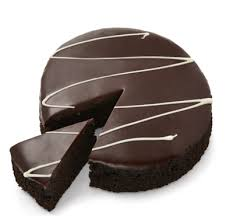

Mudcake

Description
I will not bore you with a long story of my family history.
Ingredients
- 100g butter
- 2.5dl caster sugar
- 2 eggs
- 1dl wheat flour
- 3tbls cacao
- 1tsp vanilla sugar
- Powdered sugar (for garnish)
Instructions
- Set the oven to 170 degrees Celsius
- Melt the butter in a pot, lift the pot off the heat
- Stir down the butter and eggs, mix well. Add the remaining ingredients and make sure it is well combined.
- Pour the batter in a buttered and breaded tin with a removable edge, about 24cm in diameter
- Bake in the middle of the oven for about 15 minutes. The cake should be low with a fairly hard surface and slightly sticky in the middle.
- Let the cake cool. Garnish with a powdering of powdered sugar. Serve with cream or ice-cream and fruit
- ENJOY!